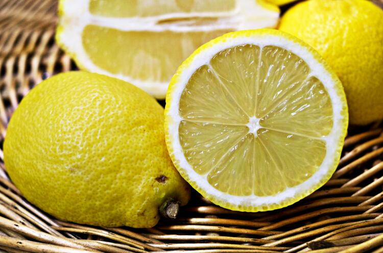

柠檬的功效与作用合集
“以前，很多上一辈的人都会认为柠檬的味道过于酸，想着可能这辈子都不会碰它，但在不知不觉中，柠檬已悄然走进我们的生活：拼盘里的点缀，冷饮店饮料的装饰，牛排里提鲜之物，酸甜可口的柠檬茶······柠檬，拥有独特的作用于功效，甚至是药物的替代品的它，已成为我们生活之中不可或缺的一种食材。”

柠檬作用和功效
柠檬之中富含丰富的维生素C、糖类、钙、磷、铁、维生素B1、维生素B2、烟酸、奎宁酸、柠檬酸、苹果酸、橙皮苷、柚皮苷、香豆精、高量钾元素和低量钠元素等对人体十分有益的成分。其中，维生素C能维持人体各种组织和细胞间质的生成，并能保持它们正常的生理机能。
此外，人体内的母质、粘合和成胶质等都需要维生素C来保护。所以当维生素C缺少了，细胞之间的间的胶状物也就跟着变少。这样，细胞组织就会变脆，失去抵抗外力的能力，人体就容易出现坏血症。
一、药用价值
抗坏血病：柠檬汁液中分离出的“已糖醛酸”（即维生素C）是对抗抗坏血酸的主要要素。
解暑开胃：柠檬果皮富含芳香挥发的成分，它可以生津解暑，开胃醒脾。因夏季暑湿较重，故而很多人感到疲惫乏力，长时间工作或学习之后往往会感觉胃口不佳可以喝一杯柠檬泡水，其清新酸爽的味道可以让人精神一振，进而可以打开胃口。在西餐中多用柠檬作为海鲜的调味剂，可以除去腥味异味。在东南亚菜品则用它来直接烹煮，以突显其酸甜的食味。在中国，南方人爱吃的烤鸭、烧鹅中，也少不了柠檬这一调味品。
预防心血管疾病：柠檬富含维生素C和维生素P，可以增强血管弹性和韧性，可以预防和治疗高血压和心肌梗塞等症状。近年来的一些研究成果表明，青柠檬中含有一种近似于胰岛素的成分，可以使异常高的血糖值降低。
抗菌消炎：柠檬富含维生素C，对于人体发挥的作用如同天然抗生素，具有抗菌消炎、增强人体免疫力等多种功效，大家平时可多喝热柠檬水来保养身体。
延缓衰老抑制色素沉着：柠檬中含有维生素B1．维生素B2．维生素C等多种营养成分，其中还含有丰富的有机酸、柠檬酸。其中，柠檬是高度碱性食品，具有很强的抗氧化作用，对促进人体肌肤的新陈代谢、延缓衰老及抑制色素沉着等具有十分有效的作用。柠檬在化妆品中主要用途是美白，因为它含有丰富的维生素C；因为刺激性大而易过敏，如若长期食用会长痘痘，所以不建议直接敷脸。
消除晨吐：两广地区中医著述《粤语》记载：“柠檬，宜母子，味极酸，孕妇肝虚嗜之，故曰宜母。当熟时，人家竞买以多藏而经岁久为尚，汁可代醋。”就是说，怀孕妇女可以放置一些柠檬在床边，早上起来嗅一嗅，有消除晨吐的效应。
常吃柠檬清热化痰：柠檬可以袪痰。柠檬皮的袪痰功效甚至比柑橘还要强。在夏季，天气湿热，如果饮食上不加以注意，人体的内湿和自然气候的外湿会相互感应，湿浊郁积日久就可能生痰。因此，夏季常常出现痰多，咽喉不适等症状。这时，可将柠檬汁加入温水和少量食盐，便可将喉咙积聚的浓痰顺利咳出。
二、食用价值
主要为榨汁用，有时也用做烹饪调料，但基本不用作鲜食。由于柠檬富含维生素C，所以它被认为是"坏血病"的克星。
在西式烹饪中，柠檬可以作为装饰，也可作为原料。柠檬可以代替食盐。可以防止水果和蔬菜变色。柠檬可以给汤、蔬菜、蛋糕、冰激凌等调味，还可用于制作果酱。柠檬可以代替醋，为牛肉、猪肉和鱼等调味。此外，柠檬还可以作为调味品加到茶中。柠檬可以干化或糖渍食用，以及作为酱和甜点调味。
泡水饮用：将柠檬鲜果或柠檬皮洗净，横切成约为2mm厚的片，去除种子后直接放入杯中沏凉开水，再加入适量冰糖即可饮用。
功效：能行气，祛痰，健胃，治胃痛，咳喘。
制糖渍柠檬：先将柠檬洗净，切片、去籽，按1千克柠檬片2-3千克白砂糖的比例，采用一层柠檬一层糖的方法装入瓷罐或者瓶中封严。一周后即可食用（糖尿病患者可采用盐渍，方法同糖渍，食盐用量为柠檬量的25-30%）之后便可添加蜂蜜温水侵泡。
加盐鲜柠檬汁：鲜柠檬汁，加盐少许。加以温开水送服。
功效：生津解暑。
柠檬泡腾：先将泡腾颗粒溶于水中，再把柠檬汁加入，即可得到美味的柠檬汁饮料，加冰更加清凉解渴。
功效：有解暑和助消化之功效，适宜餐后饮用。
蜜泽柠檬：先柠檬用盐清洗外皮，也可在盐水里浸泡半小时。然后把柠檬两头去蒂，切成薄片。以一片柠檬，一勺蜜的顺序将所有柠檬都腌进一个无水无油的玻璃密封罐（蜜一定要掩盖过柠檬片）。盖好盖子，放入冰箱冷藏室保存。腌制一晚上就可以开喝了。三四天后再夹出柠檬冲泡味道会更佳。冲水的时候直接夹出一两片，再挖出两勺蜂蜜柠檬汁，一起来用温水冲泡。（不可用热水，会破坏蜂蜜之中的营养成分）
三、经济价值
柠檬叶可用于提取香料。柠檬鲜果表皮可以生产柠檬香精油，柠檬香精油既是生产高级化妆品的重要原料，又是生产治疗结石病药物的重要成分。柠檬果胚还可生产果胶和橙皮苷（Vp）。果胶既是生产高级糖果、蜜饯、果酱的重要原料，又可用于生产治疗胃病的药物。橙皮苷（VP）主要用于治疗心血管疾病。柠檬果胚可榨取的汁液既可生产高级饮料，又可生产高级果酒。柠檬果渣可作为饲料或肥料。柠檬种子可榨取高级食用油或者入药。因此柠檬全身都是宝，是加工绿色产品的重要原料。
 上一篇
上一篇